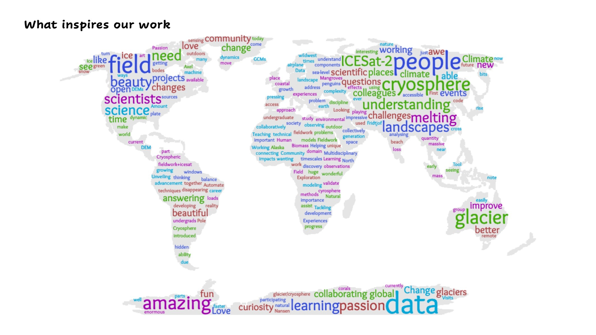

Welcome!
Welcome to the ICESat-2 hackweek! We look forward to working with you in building an open and collaborative community as we explore the cryosphere using ICESat-2 datasets.
Quick Links
Here are some quick links to material for our upcoming June 2020 event:
- hackweek schedule: overview of our planned virtual events spanning June 8 - 18, 2020.
- preliminary work: everything you need to know to be ready for the hackweek.
- the Pangeo Hub: link for accessing the Pangeo deployment.
- Getting Help Decision Tree: figure to help you determine the best place to get help.
What inspires the 2020 hackweek community?

What is a hackweek?
Hackweeks were originally designed by the University of Washington's eScience Institute, and they aim to provide a welcoming learning environment where you can learn new software tools, collaborate with colleagues, build community and make progress on specific projects. Our hackweek model is constantly evolving and we invite you actively participate as we experiment with new approaches and ideas.

Why have a virtual hackweek?
The 2020 coronavirus pandemic has required us to rethink and redesign how we offer hackweeks. Community building, networking and peer learning are core elements of our hackweek mission. As an organizing team we are exploring new ways that we can still achieve these goals in a virutal hackweek. We invite all participants to join us as we experiment in various ways, and to recognize that as a community we are all figuring this out as we go along.
Roadmap
This documentation will act as your primary resource for navigating the logistics, scheduling, tutorials and project work within the hackweek. Here is a general roadmap of our event:
- Introductory Session: We will begin our virtual time together with an introductory zoom call during which we will share our Code of Conduct and intentions for a positive Learning Community. We will take some time to connect with each other with some facilitated conversations. We will describe the Virtual Technology that we will be using and discuss virtual etiquette.
- Pre-event Tutorials: We will work through tutorials on Git/GitHub and Python/iPtyhon/Jupyter.
- Project Preparation: Just before our main hacking event, we will gather together virutally to pitch project ideas and begin to form project teams. We will also provide guidance on project expectations and on how to form healthy team interactions in a virtual setting.
- Hackweek: Our core event will be offered during the same week we intended to run our in-person hackweek, but will be scaled back to 4 days (June 15-18), and the daily duration will be shorter. Each day will begin with a tutorial session and group check-in, prior to an open hacking session. We will work with groups to schedule some time that most or all group members can work collaboratively. Members of our planning team will be available at designated times to work directly with each project.
- Surveys and Feedback: Immediately after the event we will do a group debriefing session: What went well? What could be improved next time?
- Post-event Tutorials: If time and energy permit, we will continue to co-create tutorials and educational opportunities after the event, especially for those who wish to dig into more advanced topics. We will try to offer regular office hours to follow up on core concepts. We can also explore ways to keep momentum going on projects.
General Structure
As an organizing team, our primary commit to participants is to create inclusive, positive learning spaces that are as accessible to as many participants as possible. Here are some ways we plan to do this:
- we will teach our core tutorials in two stages:
- we will offer a 60-90 minute training that will be recorded. Instructors will work through examples and there will be some interactive work. Participants unable to attend the live training can work through content at their own pace.
- each tutorial will be followed up with question-and-answer sessions. We will try to host several sessions per tutorial, depending on instructor availabilty. Peer-learning will be encouraged, and each session will be moderated.
- all tutorials will be created using interactive coding examples in Jupyter Notebooks
- all participants will have continuous access to a shared, web-accessible computational environment through the duration of the event.
- each zoom session will be moderated by at least two hackweek organizers. A professional facilitator will assist in designing and moderating many sessions, including the virtual project work.
- we will offer individual and group support mechanisms to help navigate technical and social challenges as they arise.
- we will check-in frequently with groups and individuals through virtual stand-ups, anonymous polling and other mechanisms in order to engage with people on all levels of proficiency
- we will have zoom spaces dedicated to social exchanges, music, art and other restorative activities
- we will take breaks and encourage self-care and rest